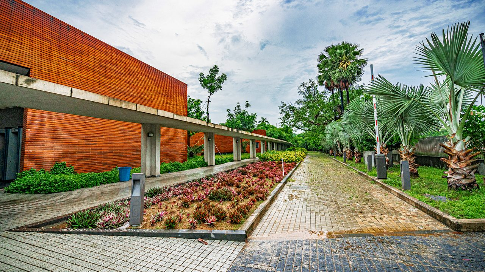
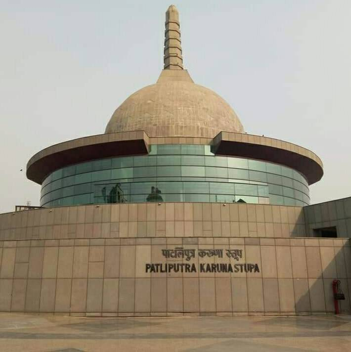
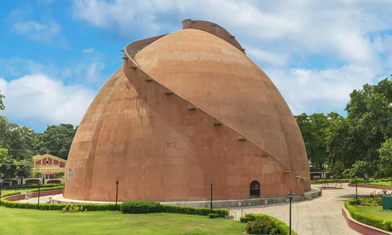
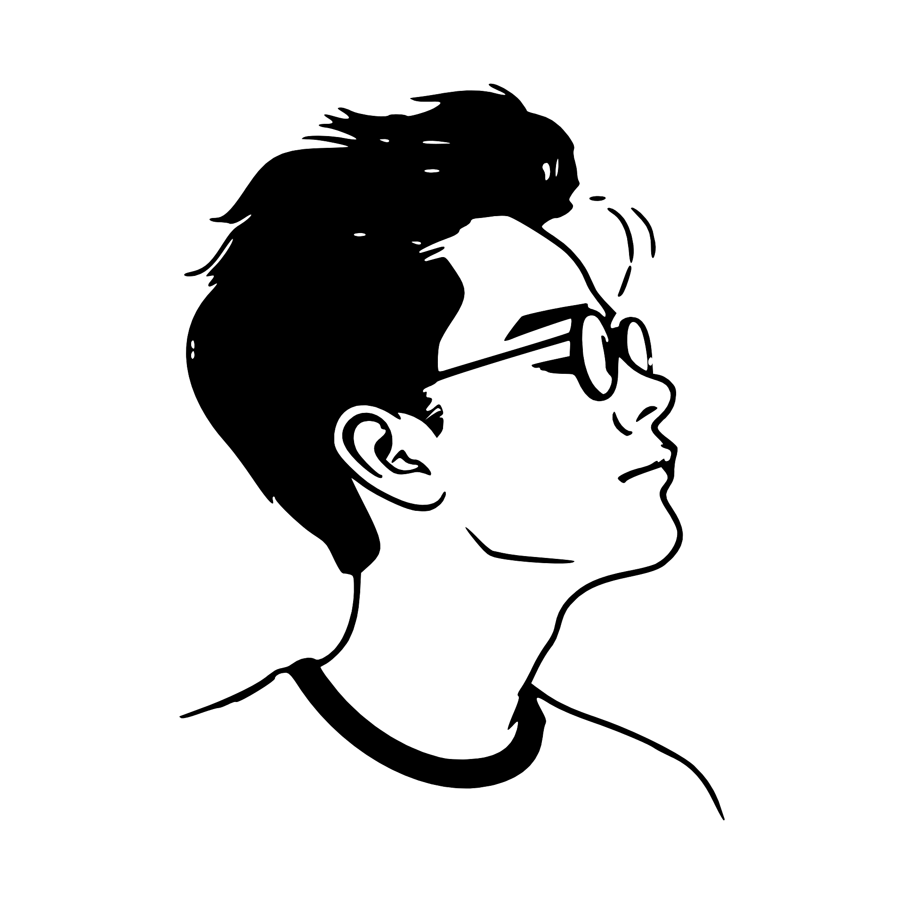

Take a virtual tour of the Bihar Museum and explore its magnificent galleries and exhibitions. Discover its rich history, art, and cultural heritage.

Spread across 22 acres of greenery and featuring the Buddha Museum and a meditation center, Buddha Smriti Park is a perfect combination of relaxation and peace.

golghar is an iconic granary built by the British in 1786 to store food grains during famines. This massive dome-shaped pillar-less structure offers great views of the city and the Ganga river from the top.

Hey i know each and every places of Patna, i can show you all of its best places and also enjoy delicious local food.